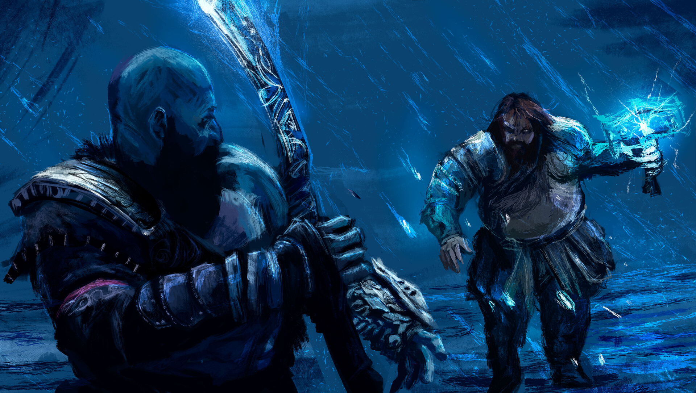

Etiqueta de la primera diapositiva
Algún contenido placeholder representativo para la primera diapositiva.

Etiqueta de la segunda diapositiva
Algún contenido placeholder representativo para la segunda diapositiva.

Etiqueta de la tercera diapositiva
Algún contenido placeholder representativo para la tercera diapositiva.
Hacha Leviatan
El hacha fue forjada usando los gritos helados de troles gélidos,
dándole la capacidad de lanzar ataques de hielo capaces de congelar incluso cosas no corpóreas.
El Pomo del arma es sustituible y cada uno le concede cualidades adicionales distintas,
lo mismo ocurre con las runas que se pueden imbuir en ella.
dándole la capacidad de lanzar ataques de hielo capaces de congelar incluso cosas no corpóreas.
El Pomo del arma es sustituible y cada uno le concede cualidades adicionales distintas,
lo mismo ocurre con las runas que se pueden imbuir en ella.
Espadas del Caos
Las Espadas de Caos, forjadas en las nauseabundas profundidades del Hades.
Una vez adheridas, las hojas se mantuvieron así, encadenadas a la carne chamuscada,
una prolongación del cuerpo de su portador, un recordatorio permanente de la promesa de Kratos.
Una vez adheridas, las hojas se mantuvieron así, encadenadas a la carne chamuscada,
una prolongación del cuerpo de su portador, un recordatorio permanente de la promesa de Kratos.
Lanza de Draupnir
Draupnir o Draupner era la argolla mágica que fue dada a Odín por el enano Brok,
que la creó junto a su hermano Sindri. Ésta tenía el poder de hacer ocho copias de igual valor cada nueve noches.
Más tarde Odín pone la argolla en la pira funeraria de Baldr,
que luego se la devuelve por medio de Hermod.
que la creó junto a su hermano Sindri. Ésta tenía el poder de hacer ocho copias de igual valor cada nueve noches.
Más tarde Odín pone la argolla en la pira funeraria de Baldr,
que luego se la devuelve por medio de Hermod.
"Si todos en el Olimpo me niegan mi venganza, entonces todos en el Olimpo moriran"